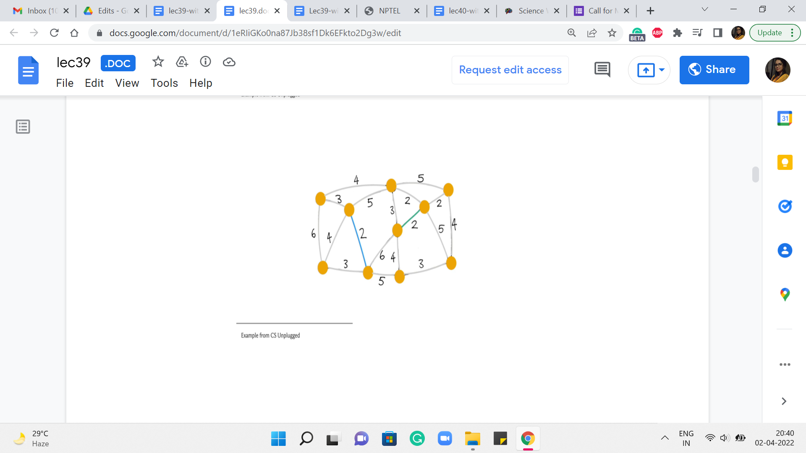
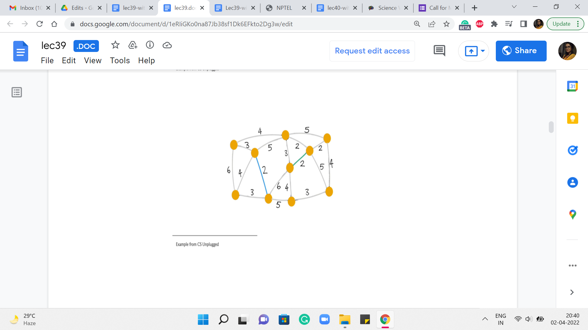
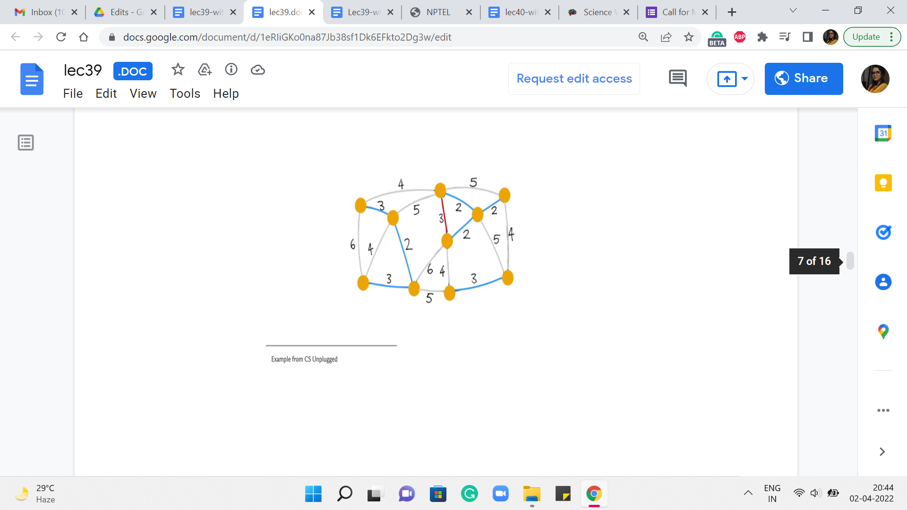
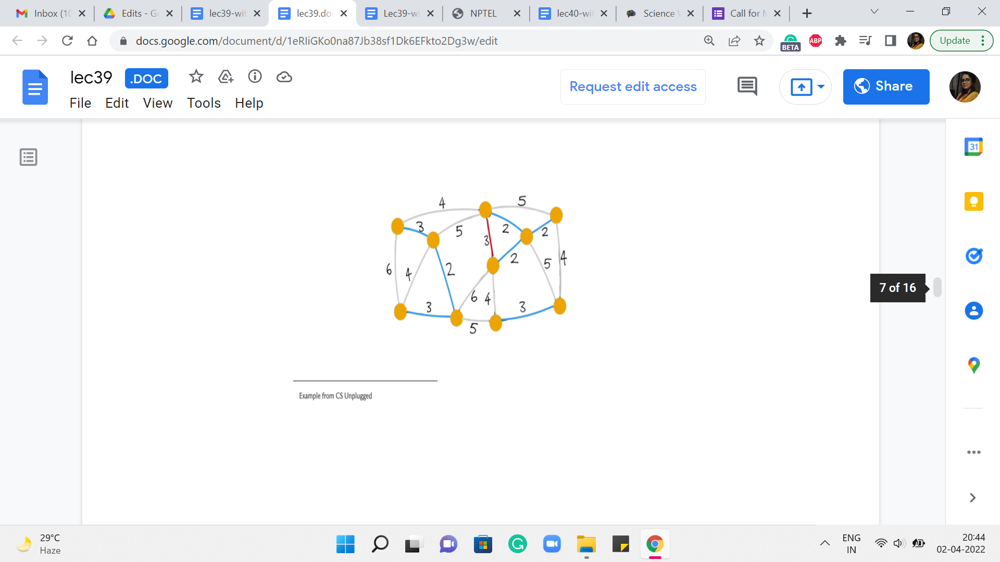
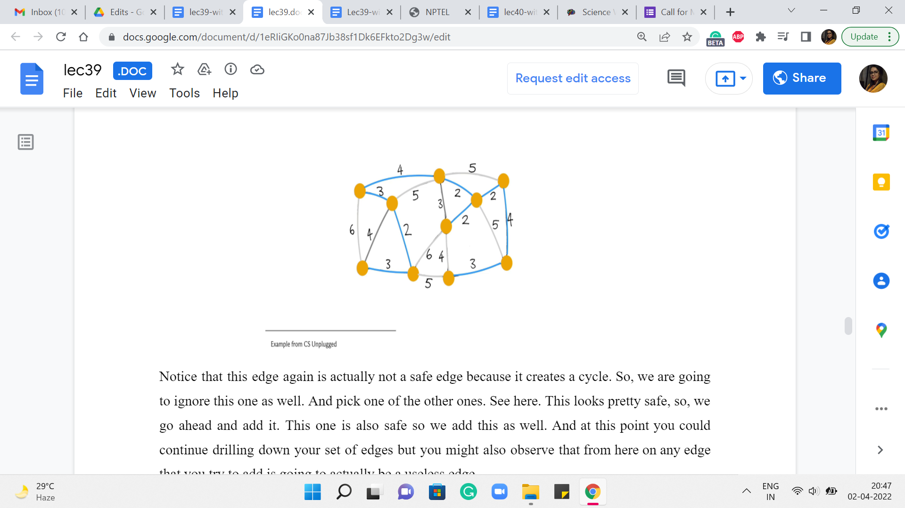
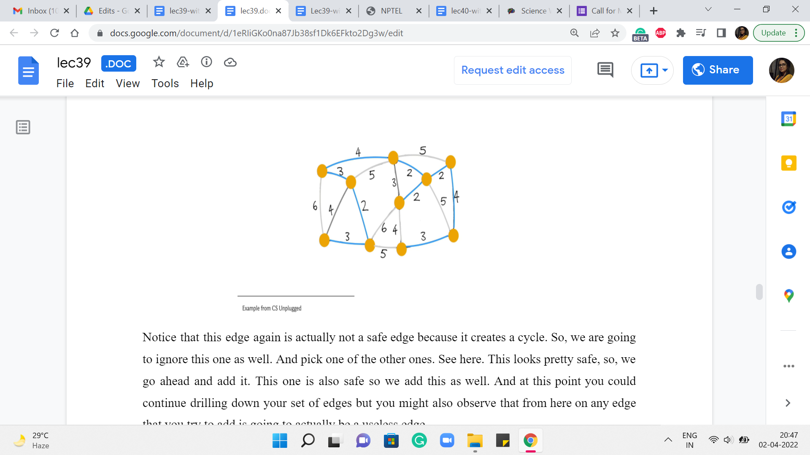
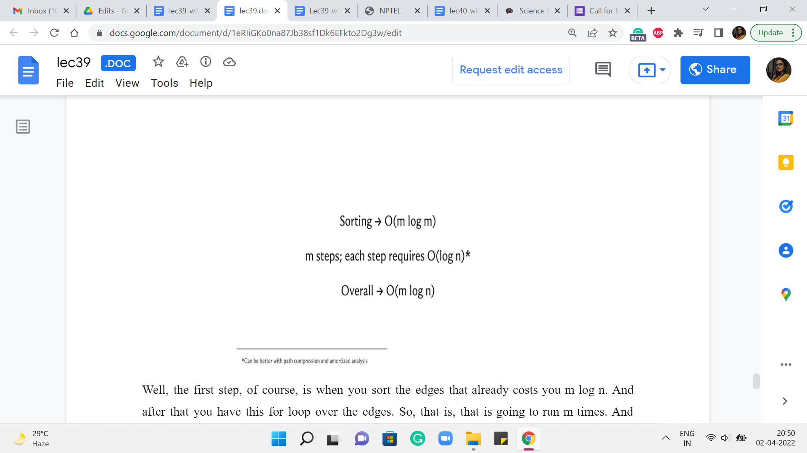

Minimum Spanning Trees - Module 1 (Kruskal’s Algorithm)
Lecture - 39
Minimum Spanning Trees - Module 1 (Kruskal’s Algorithm)
(Refer Slide Time: 00:11)

Welcome back to the final segment of the first module of Minimum Spanning Trees. So, here I want to tell you about Kruskal’s algorithm, which is a contrasting way of building up a minimum spanning tree and, certainly, a different approach from Prim’s algorithm. While you can visualize Prim’s algorithm as slowly growing out a large component starting from just a single vertex, Kruskal’s algorithm takes a more global view and is closer in spirit to the first algorithm that we discussed, where we said, let us just keep picking safe edges as long as we can. So, that is what is going to more or less happen here. Let us take a look at how we can think of Kruskal’s algorithm in terms of iteratively building up a spanning forest using safe edges.
(Refer Slide Time: 00:58, 01:11 & 01:18)


So, as a standard by now, we are going to initialize the algorithm by thinking of the spanning forest that is just the empty graph on the vertex set of G. And after this, what we are going to do is just consider edges in increasing order of weight. And if an edge is safe to add to the graph, if it is safe in the current graph, then we simply add it.
That is all that the algorithm does. It just processes the edges in increasing order of weight and adds the ones that are safe to add. So, you can imagine why something like a disjoint set union would be a useful data structure for implementing this algorithm. I will let you think about that in the back of your mind. While let us just go over a simulation, once again, just to be sure that we have a common understanding of the mechanics of the algorithm.
(Refer Slide Time: 01:49)
 
 

So, we are going to use the same example as before. This will also give us an opportunity to check if, you know, we get a different spanning tree. And hopefully, it has the same cost because while you can have multiple ‘minimum spanning trees,’ they should all, of course, by definition, have the same total cost. So, let us see what happens with Kruskal’s algorithm. To begin with, all the vertices that you see here are a part of the forest; none of the edges belong to the forest just yet.
What we are going to do is start processing the edges in increasing order of weight. So, as an example, you might choose to pick this edge. It is one of the ones that has minimum weight. And the question that we want to ask ourselves is, is this edge safe? Well, notice that this edge certainly does not create any cycles. We are just getting started. And notice that at any step, that is actually enough to confirm that the edge is safe.
In particular, because this is the globally minimum weight edge, you can be sure that it is also the cheapest edge coming out of whatever components that the edge is incident on. So, to answer the question ‘Is this edge safe?’ in the current iteration, all we have to do is make sure that it is not a part of a cycle. Alright. So, this edge certainly looks safe. So, we go ahead and add it to our spanning tree. And then we look for another edge, which is of minimum weight.
Let us say we look at this one, once again, looks safe. So, we add it. The next edge we pick is, say this one, again, a safe edge. So, it gets added. The next edge is also safe and also gets added to the structure that we are building up. Now the next edge that has minimum weight again, you have a few choices here. Let us say we pick this one. This again, looks safe – does not really create any cycles – so, we go ahead and add it.
(Refer Slide Time: 03:56)

 
 
What about the next stage we want to pick? Let us say it is this one. Again, does not create any cycle so, we go ahead and add it. Even the next stage that we pick looks pretty safe – does not create any cycles. So, let us go ahead and add it. The next edge that we pick that has minimum weight could be, in fact, has to be this one here. Notice that this is an interesting edge. It actually does create a cycle. So, it is, in fact, what we would call a useless edge.
And in particular, it is not a safe edge. So, we do not add this to the structure that we are building up. Moving on, the next edge of minimum weight has to be one of the edges that have weight 4. So let us try this one here.
(Refer Slide Time: 04:38)


 

Notice that this edge, again, is actually not a safe edge because it creates a cycle. So, we are going to ignore this one as well. And pick one of the other ones. Say, here. This looks pretty safe, so, we go ahead and add it.
This one is also safe so we add this as well. And at this point, you could continue drilling down your set of edges but you might also observe that from here on any edge that you try to add is going to actually be a useless edge.
And it will, in fact, create a cycle with what you already have. One of the reasons for this is that at this point, we have actually collected 9 edges. And since we are working with a graph of 10 vertices, we are actually done. So, once again, even in your implementation, it would be useful to just keep track of how many edges you have added so far and exit early.
Once you know that you are done, there is no need to analyze edges any further. You can check that the cost of this spanning tree is also 25 tallying with the cost that we got from the outcome of Prim’s algorithm. And once again, you could play around with breaking ties differently to get to different structures.
So, you can observe here that both of these algorithms may lead to different spanning trees, and in fact, two different iterations of the same algorithm if ties are broken arbitrarily can lead you to the minimum spanning trees that look different as well. So, at this point, hopefully, we understand what Kruskal’s algorithm is doing. So this is a good place to switch to a discussion of its implementation.
So, for Kruskal’s algorithm, we will try to maintain the graph as an edge list because that is convenient. Remember that the main algorithm is really a loop through a sorted list of edges. So, that is what we are going to use to store the graph.
(Refer Slide Time: 06:20)

So, to begin with, we are going to actually just sort the edge list after taking input in whatever form. So, once again, please look at the full code on the official repository to look up the initializations and how the data is being incorporated into the edge list EL. At the moment, the way the edge list is structured is that every element of the edge list is a collection of three numbers: The weight of the edge, and the pair of vertices that are involved in the edge itself.
So, the way this works (because the weight is the first component of this triplet), when you do the sort of a sort, it is going to sort according to the first component. So, that is nice and convenient from our point of view. So, the next thing is again, the standard initializations. We have these even for Prim’s algorithm. So, mst_cost is initialized to 0. It is the variable that will help us track the cost of the MST that we are building, and num_taken again keeps track of how many edges we have included in our spanning forests so far.
And this will help us with the optimization that I have mentioned before. This is when we just check if num_taken is n minus 1, and we exit the main loop whenever that condition is true. Now the data structure that we want to use to implement Kruskal’s algorithm is the disjoint set union data structure that we have already discussed in week four.
So, if you need to recap, you might want to just go back and look at our discussions about UnionFind from back then. For now, let me just say that the elements of our universe will correspond to the vertices and as we go along, the sets will correspond to the components of our spanning forest. So, to begin with, we have sets, which are singletons, which naturally correspond to the spanning forest that we initialize our algorithm with, where every component is just an isolated vertex.
So, this initialization that is ‘default’ to a UnionFind works out pretty well for us. Now the main body of the algorithm is going to be this ‘for’ loop, which just goes through the list of edges. And what we want to do is, well, of course, the list of edges has been sorted already according to weight, so you are approaching them in the correct order already. And now let us just look at the current edge. And what we want to know is if this edge is safe to add.
As we mentioned earlier, it is enough to check if the addition of this edge creates a cycle or not. So, given the setup that we have here, an edge is safe, if and only if it is not useless. This is not true in general, but because we are attacking the edges in increasing order of weight, we do have this luxury. So all we have to do is check for a cycle. And that is exactly what is happening in this line of code. You have a cycle exactly when the edge has both of its endpoints in the same component. But that is exactly what the same set operation from UnionFind helps you check.
So, if both u and v, which is the edge that is under consideration currently belong to the same set, that means that that is in fact a sign of a useless edge. So, we are going to ignore this edge and continue along the main ‘for’ loop. On the other hand, if this edge is not useless, then it is a safe bet to actually add this edge. So, we are going to go through the process of adding this edge by just making sure that we add the cost of this edge to the mst_cost variable.
We actually merged the components that the edge has its endpoints in – this is the key step in terms of structurally accounting for the fact that this edge has been added to your spanning tree. And after this, of course, we could also update the num_taken variable to indicate that we have added one more edge to our collection here. And then finally, we add the sanity check, which says that if you have enough edges, you can get out of this loop – if you like, just leave the party early.
At this point, we are pretty much done we could come out of this loop and print the cost of the spanning tree that we have built so far. And once again, (it would) be an interesting little bit of extra bookkeeping to keep track of the actual edges that go into your spanning tree. So, see if you can keep track of that and actually output the spanning tree when you are done. So, notice that at the end, you must have exactly one set in your UnionFind data structure for you to have actually found a spanning tree. This will happen as long as your graph is connected, to begin with.
If it is not connected, what you will end up with is a spanning forest with as many components as there are sets in your UnionFind data structure. So, that is it, that is pretty much the entire implementation for Kruskal’s Algorithm.
(Refer Slide Time: 11:14)

Let us just talk a little bit about how long this is going to take in terms of its running time. Well, the first step, of course, is when you sort the edges. That already costs you m log n. And after that, you have this for loop over the edges. So, that is going to run m times. And inside the loop, you do have operations like checking for whether u and v belong to the same set or not. And actually, taking the union of these two sets whenever they do not belong to the same set.
So, those are operations from the UnionFind data structure, and their expense will depend a little bit on the implementation. You know that if you do something like path-compression-based implementations with union-by-depth heuristics, then you could get as good as near-constant amortized complexity. But even if you do a fairly simple union by rank implementation, even the worst-case complexity of each of these steps can be bounded by log n.
So, it is just easy to think of the complexity of Kruskal’s algorithm as being m log n in the worst case, given that m is at most n squared. So, notice that this is very, very similar to the running time that we already have for Prim’s algorithm. Once again, I will repeat that if you have to make a choice, you could probably use either algorithm for most MST problems that come up in contests.
Performance-wise, it should not make a difference. But often, you are not being asked directly for MST. I mean, there are probably two kinds of problems that you will encounter. One is where most of the work is in just recognizing that it is an MST problem in the first place. And being able to come up with a clever graph abstraction where the task can be translated to the MST problem. In this case, either algorithm should work out fine.
And your main work is really in being able to see the graph and, you know, being able to model the problem as a graph. And after that, it is just plug-and-play. On the other hand, there are other kinds of problems where these are basically rip-offs of MST. So you are looking at MST variants. And then you may need to actually use one of these algorithms, but with minor tweaks. So, in that case, it may turn out that one of these approaches is better suited to the problem at hand compared to the other.
So, that is a situation in which you might want to be equally comfortable implementing either of these approaches. So, as always, you can find the code that we have discussed in the official repository. And if you are watching this video during the live run of the course, then the Discord forum is going to remain active. So, please share your comments or your questions there.
And if you are not watching this during a live run of the course, please leave your feedback in the comments on this YouTube video, and we look forward to getting back to you. Thanks so much for watching. In the next videos, we will solve some actual problems based on MST, and I will see you in the upcoming modules!